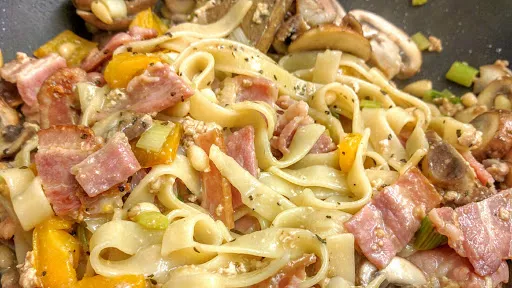

Mushroom and bacon tagliatelle
25 mins
Serves 4
Gluten Free

Gluten-free: use gluten-free pasta.
Ingredients
-
2
mugs pasta/4 bunches tagliatelle
-
250
g streaky bacon
-
1
tbsp olive oil
-
1
yellow/orange pepper, cut into small chunks
-
2
cloves garlic, finely chopped
- bunch spring onions, chopped
-
250
g chestnut mushrooms, sliced
-
300
ml Greek Yoghurt
-
½
mug pine nutes
-
2
tbsp freshly chopped basil
Instructions
- Put the pasta on to cook. Once cooked, drain and return to the pan until needed.
- Meanwhile, fry or grill the bacon until browned. Cut into bitesized chunks.
- Heat the oil in a large frying pan or wok and add the peppers and garlic. Fry for 2-3 minutes
until the peppers begin to brown. Add the mushrooms and spring onions and fry for 1 minute
.
- Add the yoghurt and pine nuts and heat through.
- Add the bacon, basil and pasta to the pan and mix together. Season well.
Nosh: Quick & Easy
Short Link
Long Link